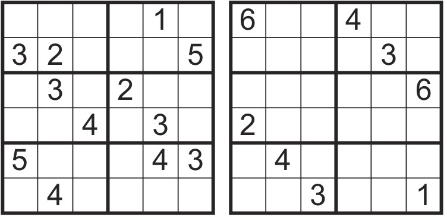

Robiłeś kiedyś sudoku? Nie? A może uwielbiasz zadania logiczne lub olimpijskie? Na tej stronie możesz znaleźć inspiracje do spędzania wolnego czasu, poznać nieznane ci wcześniej obszary matematyki a nawet... zostać konkursowiczem! Tutaj przestawię ci kilka propozycji, dzięki którym poznasz matematykę z innej strony lub odkryjesz konkursy z zadaniami, które lubisz.
Ta strona pokazuje zagadnienia matematyki, które sama lubię i którymi się zajmuję. Znam wszystkie te rodzaje zadań, byłam na wymienionych konkursach i dzięki temu mogę pokazać ci to wszystko z perspektywy ucznia, uczestnika konkursu, miłośnika matematyki. Być może dzięki tej stronie zainteresujesz się czymś, o czym wcześniej zwyczajnie nie wiedziałeś, lub nie sądziłeś, że jest takie fantastyczne!
Jeśli jeszcze nigdy nie robiłeś sudoku i nie wiesz, jak je robić, to zaraz się dowiesz! Klasyczne sudoku to zadanie z łatwymi zasadami, które może robić każdy. A oto zasady:
Przykładowe łatwe diagramy:


Lake Tahoe is full of wonderful places to stay. You have the ability to sleep in the outdoors in a tent, or relax like a king at a five star resort. Here are our top three resorts:

One of most important things when it comes to traveling through the great outdoors is packing accordingly. Here are a few tips: